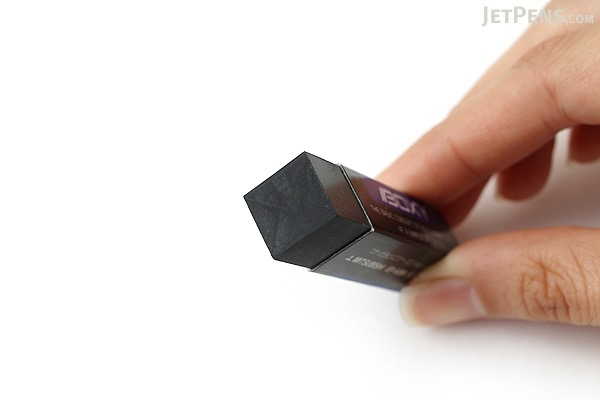
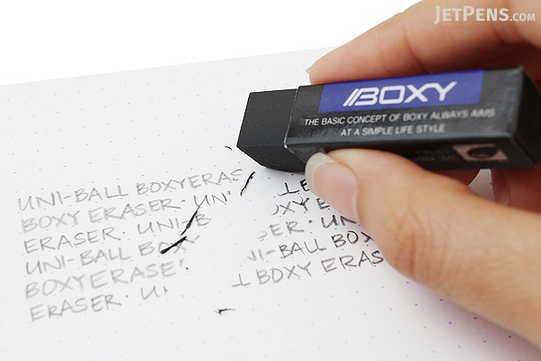
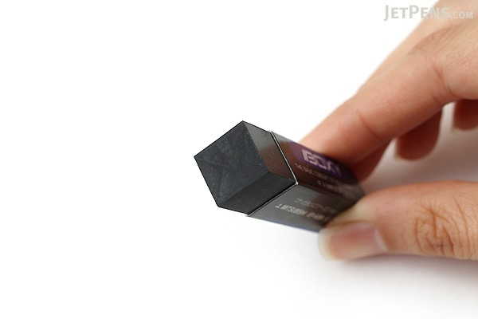
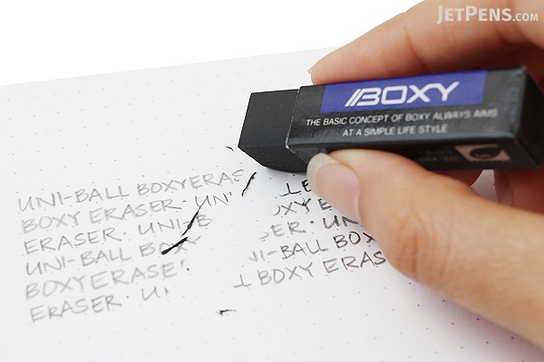
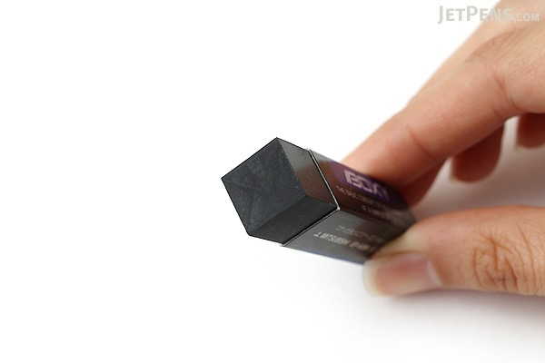
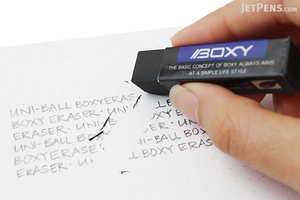

UNI BOXY ERASER
$1.4
☆ ☆ ☆ ☆ ☆


UNI BOXY ERASER
$1.4
☆ ☆ ☆ ☆ ☆
The Boxy eraser is very popular for good reason. It erases incredibly well, and the shavings stick together in thin strips for easy cleanup. Due to its small rectangular shape, it is also easy to hold and control, and serves well as an all-purpose everyday eraser.